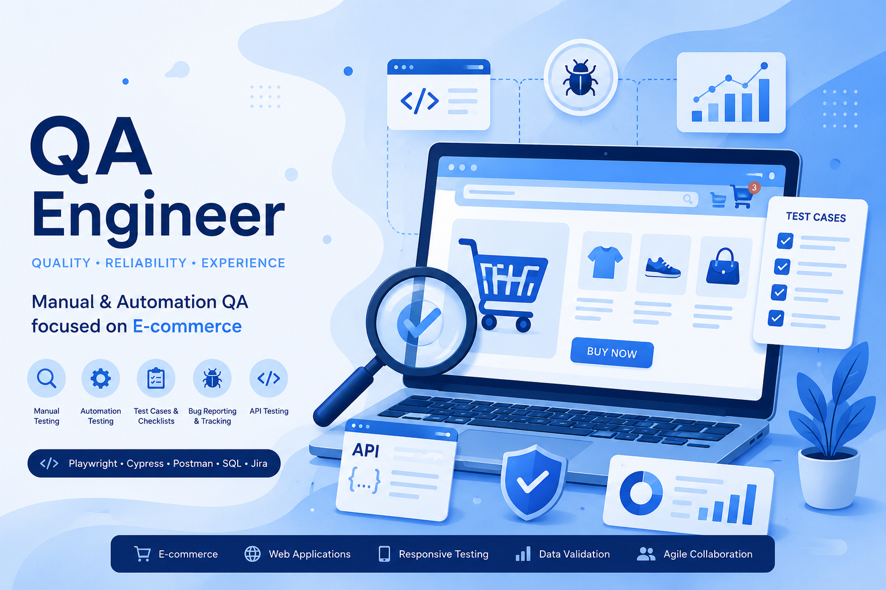
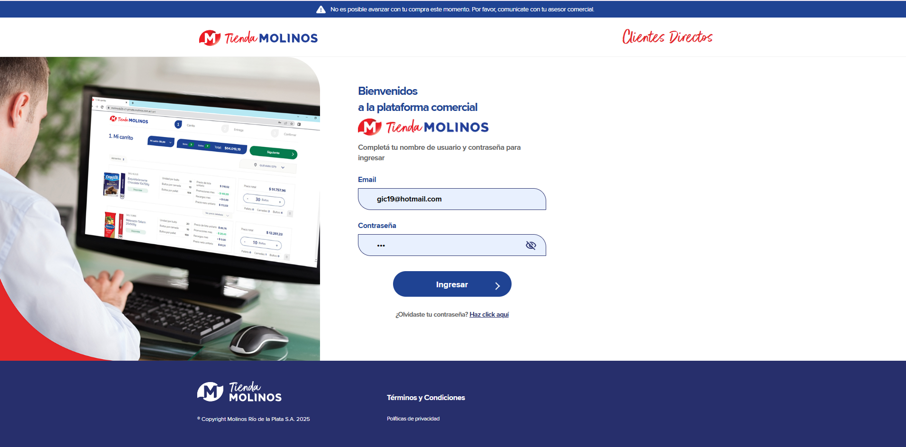
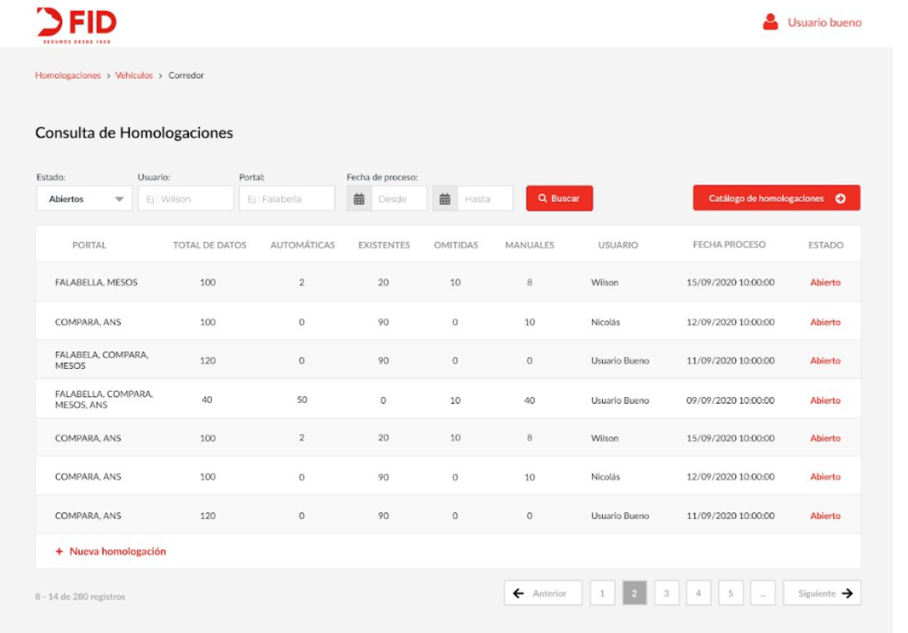
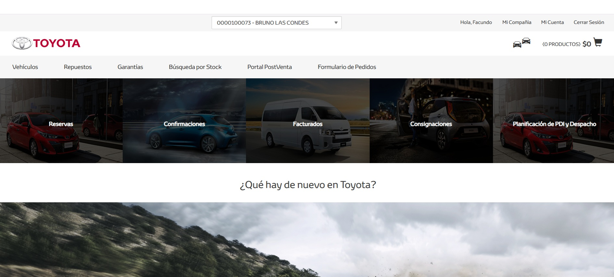
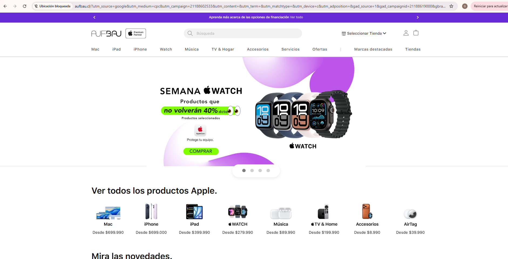
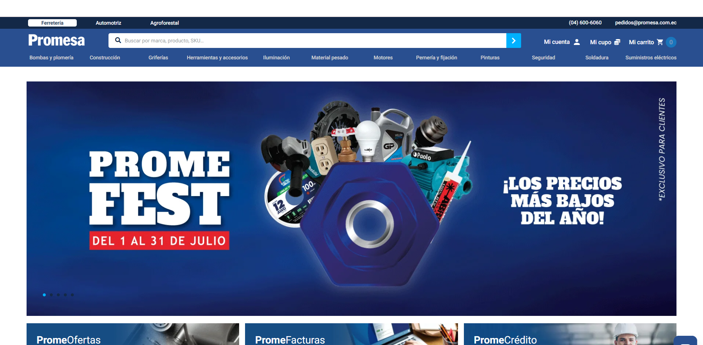

📄 Entiendo el negocio
Antes de probar funcionalidades, analizo procesos, reglas comerciales y necesidades del cliente para comprender el contexto completo.
Hola, soy
Encuentro escenarios que otros no ven
y convierto procesos de negocio
en software confiable.

Mi trabajo comienza entendiendo el negocio. La calidad no se valida al final: se construye desde el análisis hasta la entrega.
Antes de probar funcionalidades, analizo procesos, reglas comerciales y necesidades del cliente para comprender el contexto completo.
Identifico escenarios críticos, casos límite y posibles impactos antes de comenzar la ejecución de pruebas.
Defino casos funcionales, Smoke, Regresión y recorridos End-to-End según los objetivos del Sprint.
Automatizo recorridos críticos utilizando Playwright para acelerar regresiones y mejorar la confiabilidad.
Colaboro diariamente con Developers, Product Owners, Analistas Funcionales y clientes.
Verifico que cada entrega cumpla con las reglas de negocio antes de llegar a producción.
Casos reales donde participé como QA Functional Analyst y Automation QA, colaborando con equipos de desarrollo, negocio y clientes para construir productos confiables.

Participé en el análisis funcional, validación y automatización de una plataforma SAP Commerce para canales B2B y B2C. Trabajé desde el entendimiento de las reglas de negocio hasta la presentación de funcionalidades al cliente en cada Sprint.

OutSystems Platform
Testing funcional y homologaciones sobre plataforma de seguros.
Case Study próximamente
SAP Commerce
Functional QA sobre plataforma eCommerce B2B de Postventa y Repuestos, validando procesos comerciales, integraciones y gestión de contenidos.
Case Study próximamente
SAP Commerce
Automatización y testing funcional sobre múltiples eCommerce del grupo.
Case Study próximamente
SAP Commerce
Automatización End-to-End y validación funcional del eCommerce.
Case Study próximamenteCASO DE ESTUDIO
QA Functional Analyst · SAP Commerce · B2B & B2C
Participé como QA Functional Analyst en una plataforma e-commerce desarrollada sobre SAP Commerce para clientes B2B y B2C. Mi trabajo consistía en acompañar cada Sprint desde el análisis funcional hasta la validación final y la presentación de la entrega al cliente.
Mientras que el canal B2C representaba un e-commerce tradicional, el canal B2B incorporaba reglas comerciales mucho más complejas.
Cada nueva funcionalidad debía respetar reglas de negocio muy específicas que impactaban directamente en el proceso de compra. Un pequeño cambio podía modificar promociones, descuentos, disponibilidad de productos o condiciones comerciales.
Analicé requerimientos funcionales y reglas comerciales para comprender el impacto de cada desarrollo antes de comenzar las pruebas.
Diseñé y ejecuté escenarios funcionales cubriendo promociones, descuentos, configuraciones B2B, warehouses y recorridos completos de compra.
Implementé pruebas End-to-End con Playwright para automatizar los recorridos más críticos y agilizar las regresiones.
Participé en Sprint Planning, refinamientos, validaciones funcionales y demos junto a Product Owners, Developers y clientes.
Una de las funcionalidades más desafiantes fue el proceso de factoreo, que involucraba múltiples reglas comerciales y distintos escenarios según el perfil del cliente. Fue necesario validar combinaciones de configuraciones para asegurar que todo el flujo respondiera correctamente antes de liberar la funcionalidad.
Estas incidencias fueron detectadas durante las validaciones y corregidas antes de llegar a producción.
Al finalizar cada Sprint, presentaba las nuevas funcionalidades al cliente mediante demos funcionales. Explicaba el comportamiento de la aplicación, mostraba los escenarios implementados, respondía consultas y validaba junto al cliente que los requerimientos se hubieran cumplido correctamente
Si buscás una QA con experiencia en análisis funcional, testing de aplicaciones e-commerce y automatización con Playwright, será un gusto conversar.
Escribime Descargar CV